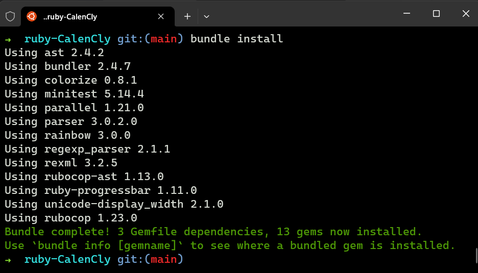
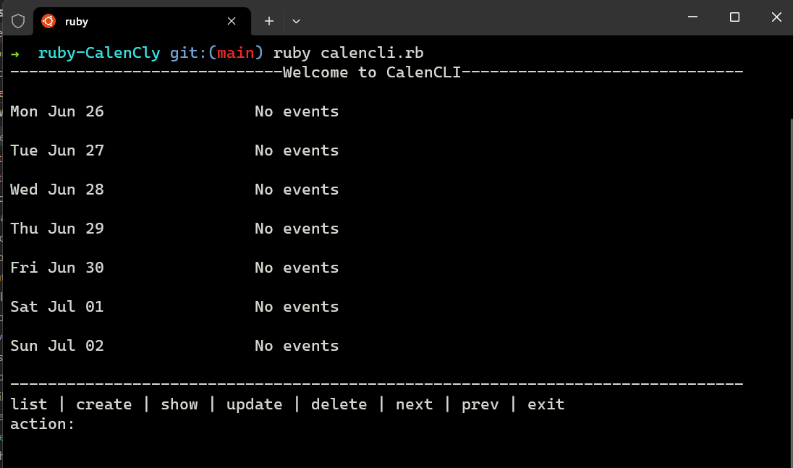

Paso Nro 2: Ejecutar Bundle install
Una vez terminado el paso 1 realizamos la instalacion de bundle install para que se puedan descargar las gemas del proyecto en este caso el date y el colorize
- en la terminal ejecutamos el comando bundle install
- Esperamos a que se descarguen las gemas el tiempo va depender de la velocidad de descarga de su internet

Paso Nro 3: Ejecutar el proyecto
Una vez terminado el paso 2 ejecutamos el proyecto para ello hacemos lo siguiente:
- Ejecutamos el archivo calencli.rb con el comando ruby calencli.rb
- Introducimos los comandos segun lo mencionado en el archivo README.md y siguiente el modelo de Happy paths (buen usuario)
